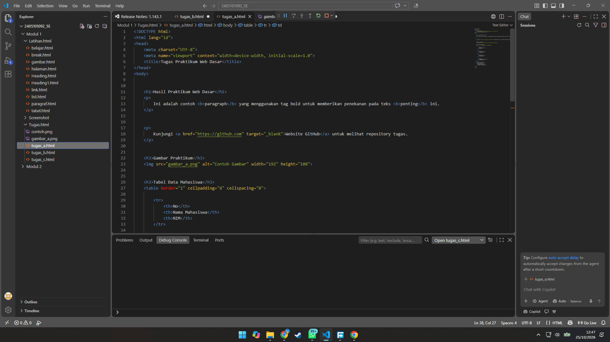

Ini adalah contoh paragraph yang menggunakan tag bold untuk memberikan penekanan pada teks penting ini.
Kunjungi Website GitHub untuk melihat repository tugas.

| No | Nama Mahasiswa | NIM |
|---|---|---|
| 1 | Gustam Nasyid S | 2405101083 |
| 2 | Rafli Akbar B | 2405101084 |
| 3 | Rahadyansyah Ibrahim P | 2405101092 |